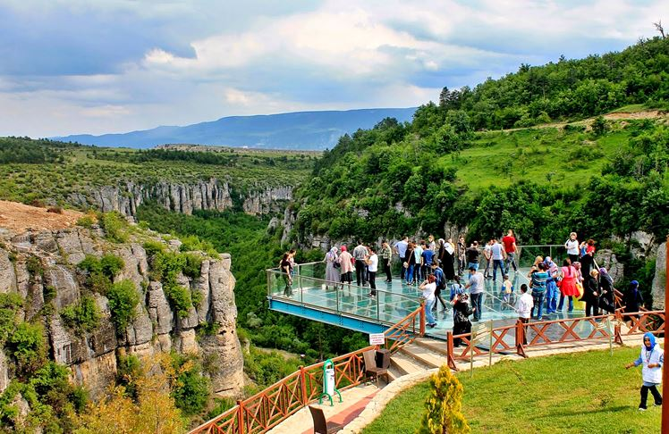
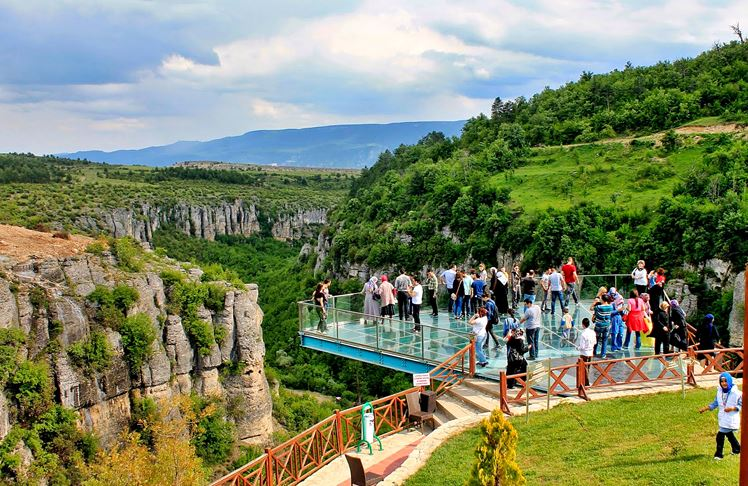

Safranbolu Kristal Cam Teras, Karabük’ün Safranbolu ilçesinde yer alan ve Tokatlı Kanyonu üzerinde inşa edilmiş etkileyici bir seyir terasır. 80 metre yüksekliğe sahip bu cam yapı, ziyaretçilere kanyonun büyüleyici manzarasını ayaklarının altından izleme fırsatı sunar. 11 metre dışa doğru uzanan teras, hem doğa severler hem de adrenalin tutkunları için popüler bir duraktır. Güvenlik önlemleriyle donatılan cam teras, Safranbolu’nun doğal güzelliklerini farklı bir açıdan görmek isteyenler için eşsiz bir deneyim sunar.
 
